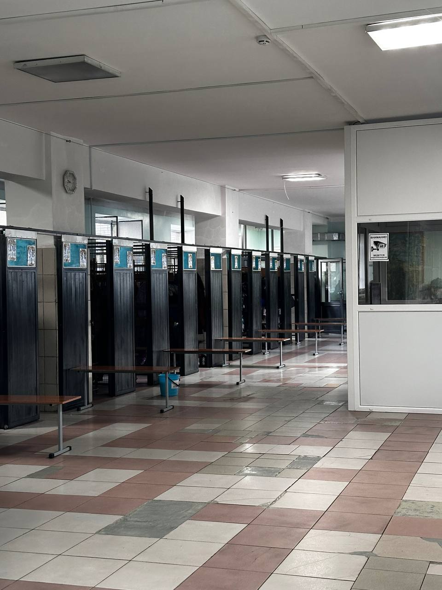
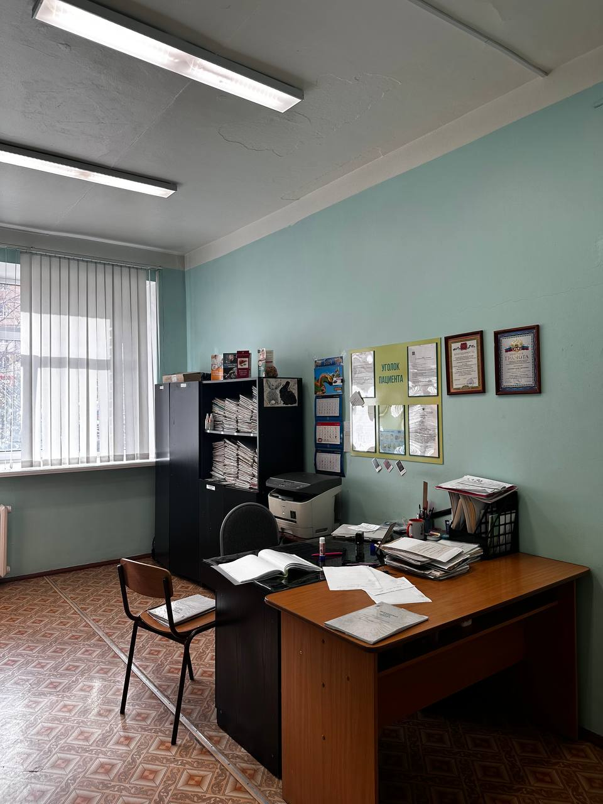
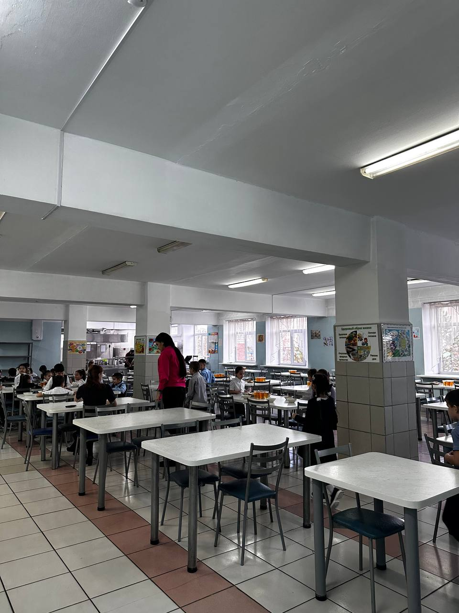

Присоединяйтесь к виртуальному туру по нашей школе и ознакомьтесь с каждым классом. Узнайте больше о наших уникальных учебных пространствах и вдохновляющей среде для обучения.
Первый этаж

Среднее звено: школьные коридоры
Школьные коридоры среднего звена — это пространство, наполненное энергией и взаимодействием. Здесь учащиеся перестраиваются между уроками, обсуждают учебные материалы и общаются друг с другом. Коридоры украшены работами учеников, что создает атмосферу дружбы и сотрудничества. На стенах также висят информационные стенды, которые знакомят студентов с важными событиями и мероприятиями школы.

Среднее звено: Спортзал
Спортзал — это место, где ученики среднего звена могут проявить свои спортивные навыки и поддерживать активный образ жизни. Здесь проходят физкультурные занятия, командные игры и спортивные соревнования. Просторный зал, оборудованный всем необходимым для занятий, вдохновляет на достижения и укрепляет командный дух среди учащихся.

Начальное звено: школьные коридоры
Коридоры начального звена полны ярких красок и оживленной атмосферы. Здесь малыши с удовольствием общаются друг с другом, обмениваются впечатлениями и делятся новостями. Каждый уголок коридора наполнен весельем, а уютные уголки для чтения и игр предоставляют детям возможность отдохнуть между уроками.

Начальное звено: Медпункт
Медпункт — это место, где заботятся о здоровье учеников. Здесь работает доброжелательный медицинский персонал, готовый оказать помощь в случае необходимости. Медпункт оборудован всем необходимым для оказания первой медицинской помощи и создания комфортных условий для восстановления детей после болезни.

Среднее звено: Столовая
Столовая для учеников — это не только место для приема пищи, но и центр общения и взаимодействия. Здесь ученики могут отдохнуть, пообщаться со своими друзьями и зарядиться энергией для дальнейших занятий. Меню разнообразное и сбалансированное, удовлетворяющее потребности растущих организмов.
Второй этаж

Среднее звено: школьные коридоры
Второй этаж — это новый уровень возможностей для учащихся среднего звена. Школьные коридоры здесь широкие и светлые, с местами для отдыха и общения. Учащиеся могли бы погрузиться в обсуждения своих проектов и делиться идеями, проходя мимо стен, украшенных творческими работами и важными объявлениями.

Начальное звено: школьные коридоры
Коридоры начального звена на втором этаже создают уютную атмосферу, где дети могут свободно перемещаться между классами. Задорные смехи, радостные возгласы и цветные рисунки на стенах делают эти коридоры поистине волшебными, приглашая малышей в мир знаний и открытий.
Третий этаж

Среднее звено: школьные коридоры
На третьем этаже коридоры среднего звена напоминают о том, что путь к знаниям всегда интересен. Здесь учащиеся подготовятся к занятиям, обсуждают свои интересы и подготавливаются к экзаменам. Пространство наполнено активностью и креативностью, что вдохновляет учеников на учебные достижения.

Начальное звено: школьные коридоры
Коридоры начального звена на третьем этаже создают атмосферу веселья и уюта. Здесь дети могут наслаждаться общением со сверстниками, обмениваясь впечатлениями и играми. Яркие стенды с работами малышей добавляют праздничности и подчеркивают уникальность каждого школьного дня.